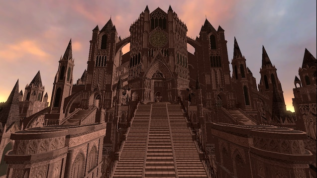
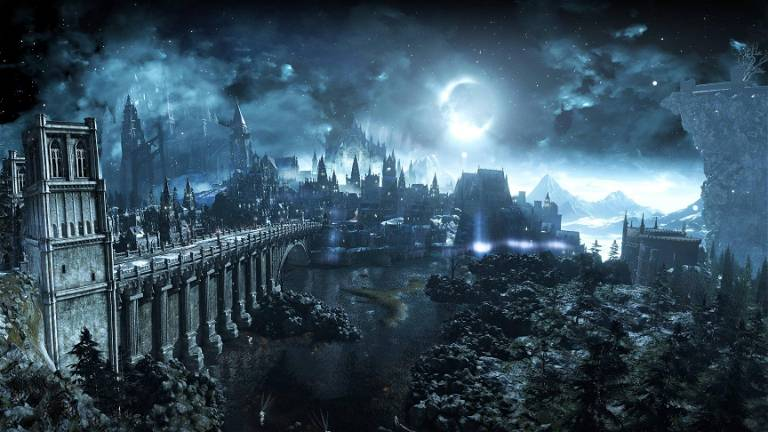

Arquitectura
Uno de los estilo artisticos más relevantes de Dark Souls
es su arquitectura, teniendo una inspiracion gótica y bizantina, y tomando
de inspiracion múltiples catedrales e iglesias reales para su diseño de niveles.


Historia
La forma de contar su historia no es para nada convencional desde el primer juego
ya que no se puede ver a simple vista, si no que se muestra como un rompecabezas
el cual el jugador debe ir armando y que muchas veces estará incompleto, siendo
necesaria la teorización y deducción del que esté del otro lado de la pantalla